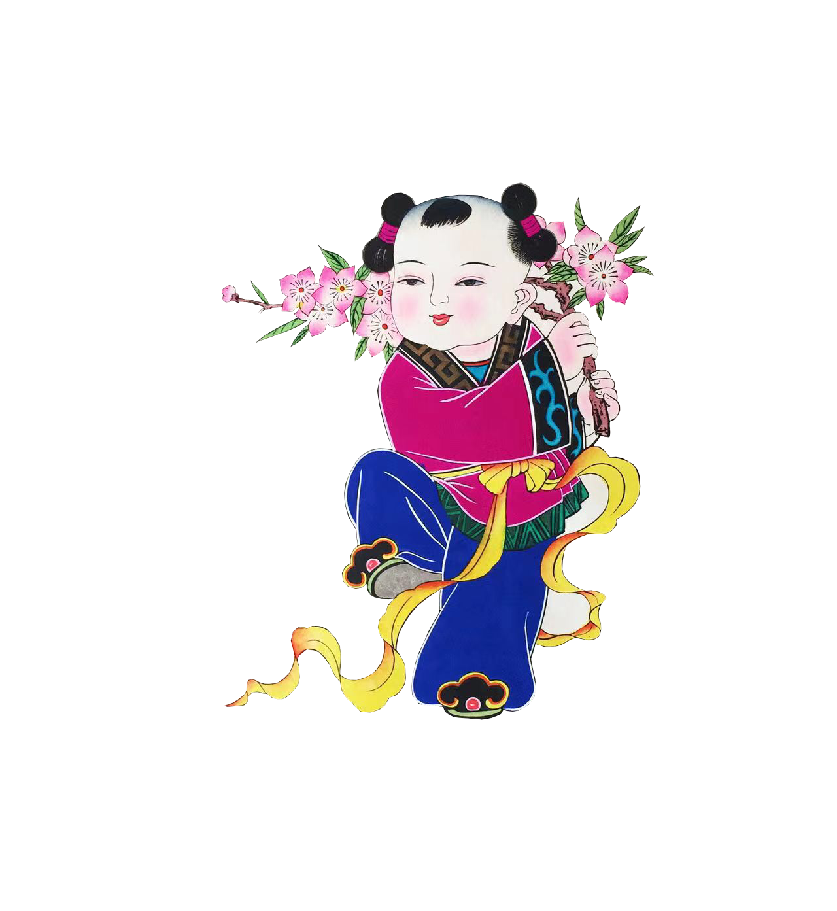

绵竹年画之作品欣赏

娃娃抱鱼，是最具代表性的题材，有多种不同的样式。 这幅是最典型的一种，亦是绵竹年画的代表之作。莲，寓意连续不断;鱼，寓意“富裕”、“富余”。含祈求美好之意。
此图想象力极为丰富，娃娃如贵子，手举元宝仰观，坐旁有大元宝、牡丹花等。背后却是一条龙，此龙身躯是金钱组成。这就是民俗所谓的“钱龙入户”。
从前川西存在一种“送财神”的风俗。每当新春，一些无赖装成财神的模样，向路人讨钱。画上“财神”嫌那个人钱给少了，赖着不走。小狗发现了假财神身上破烂的衣裤，于是咬住他的衣角。年画辛辣地讽刺了剥削人民的丑恶行为。